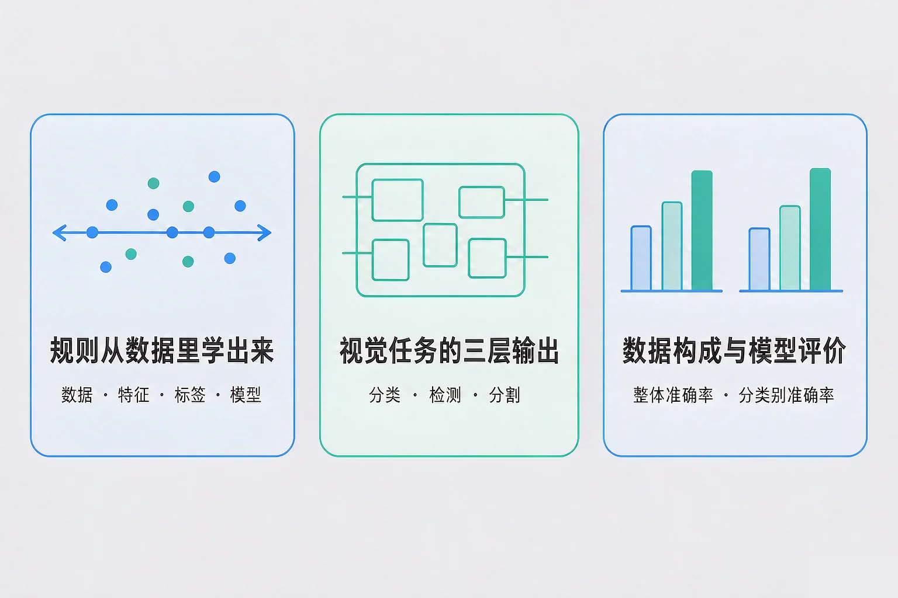
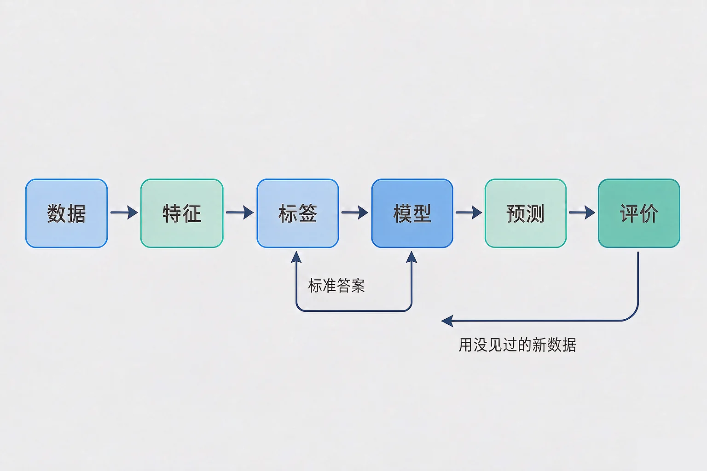
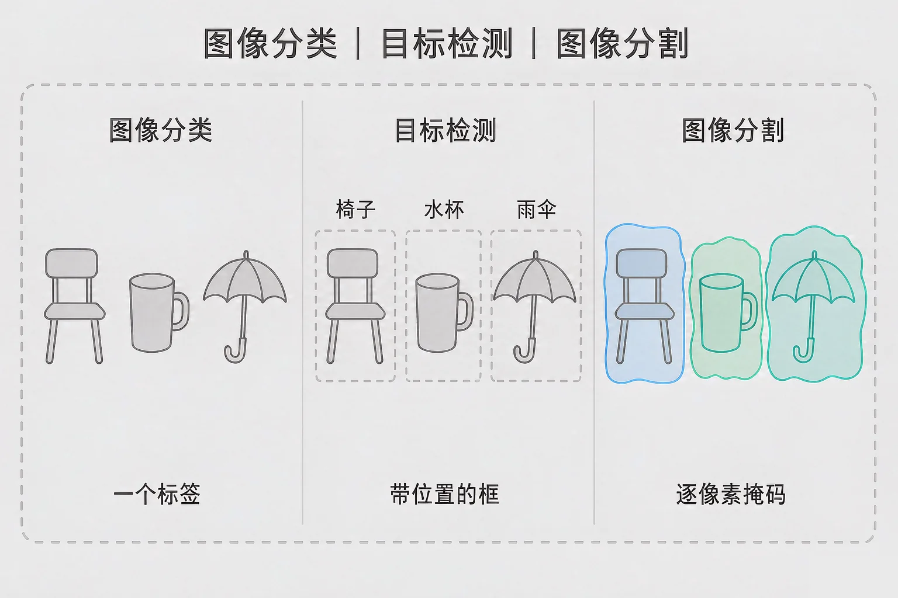

Gallery
v1.0.0 · skill v7.22.0
初中九年级 · 人工智能与智慧社会
一个应用演示时很准，换到现场就失灵——问题到底出在哪一环？

选一个你真正好奇的问题，后面的实验都会围着它转。
选择或输入后，这节课会围绕你的问题展开。
先凭直觉选一个，选完立刻看到解释——错了也没关系，正好知道要重点听哪里。
1. 人工智能应用与普通程序最本质的区别是：
规则由数据学出来，是这类应用的根基；数据里没有的情况，它多半也处理不好。错因提醒：常见错误是误认为「模型自己会想」——它的全部依据都来自训练数据。
2. 一个模型在教室里演示几乎次次正确，搬到走廊上却频频出错。最该先查的是：
模型只见过训练数据里的情形；数据没覆盖的光线、角度、背景，它就没有依据。错因提醒：容易搞混的是把这类问题当成程序缺陷——现象出在现场，根源往往在数据。
3. 要统计画面里有几个人，并给出每个人的位置，应该选哪类任务？
计数和定位都需要位置信息，检测的输出形式正好对应。错因提醒：许多同学误认为「越精细的任务越合适」——分割也能用，但标注与计算代价最高，需求只要位置就不必用分割。
为什么要学这一课？你已经知道互联网服务怎么工作，也见过不少会「认图」「会说话」的应用。但它们为什么有时准、有时不准，靠猜是猜不出来的，所以我们要先弄清一个应用是由哪些要素搭起来的。
普通程序是把规则写死：人告诉它，什么情况该做什么。机器学习是把规则学出来：人给一批带答案的样本，模型自己去总结其中的规律。

🔍 深层理解 换个角度再看一遍这件事，看看能不能说出背后的原理。
看见它：同一个需求可以用不同特征来描述。用「可疑链接个数」和用「发信时间」识别的可疑消息，表现和误判类型完全不同。
拆开它：任何一个人工智能应用都能拆成这六步。哪一步含糊，最终效果就无法解释，也无法改进。
迁移它：这种「给样本、学规律、用新数据检验」的做法，也是人学习的常见路径：练习、反馈、再检验。
拖动判定线，把两类样本尽量分开，看准确率、误报数和漏报数怎么此消彼长。
同一张图，三种任务。图像分类、目标检测、图像分割，差别不在「谁更先进」，而在输出的形式：一个标签、一串位置框、还是一张逐像素的掩码图。
图像分类
整张图给一个标签。
目标检测
每个物体带位置框和置信度。
图像分割
每个像素都归到某一类。

最容易搞混的是把检测当成「更准的分类」。它们解决的不是同一件事：分类回答「这是什么」，检测还回答「在哪里、有几个」。另一个常见错误是忽略置信度阈值——检测器报出的每个目标都带一个置信度，调高阈值会漏检，调低阈值会误报。误认为「模型没报出来就是画面里没有」，是这一课最容易踩的坑。
🔍 深层理解 换个角度再看一遍这件事，看看能不能说出背后的原理。
比较它：三类任务是同一条链上越来越细的输出。信息越多，需要的数据标注越贵、算力开销越大，并不是越细越好。
迁移它：「先想清楚需要什么输出，再决定用什么方法」这条判断在这里成立，在其他问题的解决里同样成立。
切换任务类型，看同一张画面上的标注怎么变；再拖动置信度阈值，观察漏检是怎么出现的。
题目：某小组的识别装置在教室演示时几乎次次正确，到走廊使用却频频出错。程序一行没改，镜头也干净。请分析原因并给出改进方案。
很多同学误认为「换个更好的模型就能解决」，于是不停换方法。可问题出在数据没有覆盖现场的情形——换模型只是把同一份偏差学得更牢。另一处容易搞混的是用整体准确率下结论：一个永远回答「都是多数类」的模型，在样本极不均衡时也能拿到很高的准确率，但它对少数类几乎毫无用处。
先凭直觉选一个，选完立刻看到解释——错了也没关系，正好知道要重点听哪里。
1. 下面哪句话是正确的？
在训练数据上表现好，可能只是把答案记住了，所以要留一部分数据专门用来检验。错因提醒：常见错误是误认为「训练时分数高就能用」——这叫把记忆力当成了能力。
2. 一个检测器把画面里的三个物体只报出了两个。最恰当的解释是：
报不报由置信度阈值决定，阈值是可调的。错因提醒：容易搞混的是把「没报出来」直接当成「不存在」——先看阈值，再谈模型好坏。
3. 训练数据里甲类占九成、乙类占一成，而现场两者各占一半。下面哪个判断最站得住脚？
训练数据的构成决定了模型对每一类的熟练程度；整体准确率会掩盖弱势类别。错因提醒：许多同学误认为「一个数字就能代表模型好坏」——按类别分开看，才看得到真正的问题。
拖动两个滑块改变训练数据的构成，看整体准确率和各个类别准确率怎么变。现场的真实分布固定为：类别甲六成、类别乙四成。
写下来，说给同桌听：为什么一个模型的整体准确率看着还可以，却在实际使用中频频出错？
先凭直觉选一个，选完立刻看到解释——错了也没关系，正好知道要重点听哪里。
1. 要在一块地里按作物长势把农田分成几片区域，并量出每片的面积。最合适的任务是：
要按区域量面积，就需要精确的边界，只有分割的输出形式对得上。错因提醒：常见错误是只要「识别出来就行」，忽略了需求里的「量面积」这一步，矩形框量不准不规则边界。
2. 一个识别应用只收集到 60 条训练样本，两类各占一半。最该先做的事是：
样本太少，学到的规律不稳，换一批数据表现就变。数据的量和多样性是第一位的。错因提醒：容易搞混的是把调参当成万能药——参数只能调整已有的信息，变不出数据里没有的东西。
3. 某应用只看整体准确率，报告写着 92%。下面哪种做法最能发现隐藏的问题？
整体数字是平均数，分类别统计才能看出弱势类别。错因提醒：许多同学误认为「一个数字就够用」——平均数最容易掩盖的，正是最需要被看见的那一类。
回到开头那台装置：它并不是坏了，而是数据里没有走廊那种光线与角度，训练数据里又有一类样本太少。补上多样化的样本、把弱势类别补齐、评价改成按类别看，同一套流程就能在现场站住脚。
给别人讲一遍：请用「数据、特征、标签、评价」这四个词，把一个识别应用从收集数据到投入使用的过程讲清楚，并说明哪一步最容易出问题。
三层练习，做完第一、二层就算通关；第三层留给愿意继续探索的同学。
⭐ 基础巩固（必做）
⭐⭐ 能力应用（必做）
⭐⭐⭐ 迁移挑战（选做）
左边是学它之前要先会的，右边是学会之后可以继续探索的，下面是同一领域的伙伴知识。
图谱正在加载：首次进入需下载知识索引（约 1–3 秒），加载完成后本行会自动消失。